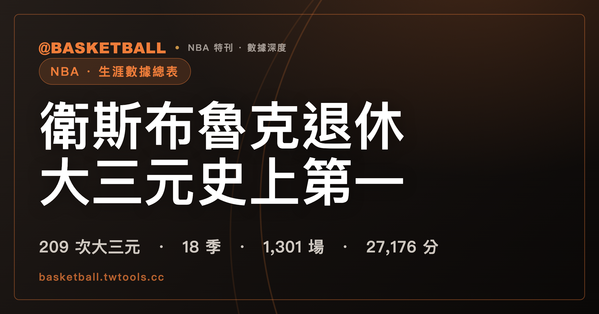

衛斯布魯克退休：209 次大三元排在史上第一，第二名還在打
衛斯布魯克（Russell Westbrook）於美國時間 2026 年 8 月 12 日（台灣時間 13 日凌晨）宣布退休，18 個賽季留下 1,301 場出賽、27,176 分、10,351 助攻與 209 次大三元；截至退休時，大三元次數是 NBA 史上最多。

NBA 專題｜生涯數據總表與榮譽紀錄
先看一件怪事。
衛斯布魯克（Russell Westbrook），台灣網友叫他「威少」，打了 18 個賽季。宣布退休用的是一支影片，旁白請了演員 Michael B. Jordan，而他本人從頭到尾沒有說一個字。美聯社的原句寫得很清楚：「shared his decision on social media in a post featuring a video narrated by actor Michael B. Jordan where the guard never says a word.」
文字的部分只有兩句：「Sometimes you don't even know when you've already watched the end.」「You had to be there. And now it's over.」中央社把這兩句譯成「有時候，你甚至不知道自己早已看到了結局。你必須親身經歷過。而現在，一切都已落幕。」
這篇整理的是那 18 季留下的數字：逐隊效力、生涯累計、大三元（六份台灣媒體稿件裡寫到 triple-double 的五份都用這個譯法）、榮譽表，以及杜蘭特（Kevin Durant）前後隔了 14 天的兩次發聲。
宣布日期是美國時間 8 月 12 日，台灣時間已經是 13 日凌晨
NBA.com 轉載的美聯社稿寫「announced Wednesday he's retiring after 18 seasons」。中時新聞網從台灣這一端記同一件事：「現年37歲的他於13日凌晨在個人社群媒體平台發文，正式宣布結束長達18個賽季的NBA生涯」。
管道是社群貼文加影片。旁白 Michael B. Jordan 是演員，TSNA 的稿子沒有替他取中文譯名，直接寫「並附上由演員Michael B. Jordan擔任旁白、回顧其職業生涯的影片」。加上「演員」兩個字，是為了和籃球場上的 Michael Jordan 區分。
最後一季在國王打了 64 場、先發 58 場，最後一戰是美國時間 3 月 19 日
生涯最後一站是沙加緬度國王，2025-26 賽季。美聯社的數字是「started 58 of the 64 games he played for Sacramento. He averaged 15.2 points and 6.7 assists」，ESPN 官方資料介面的同一季分季列給出完整場均：15.2 分、5.4 籃板、6.7 助攻、1.3 抄截，每場 29.0 分鐘。
64 場出賽、58 場先發。放回生涯的尺度上看，他 1,301 場出賽裡有 1,132 場是先發。
最後一場比賽落在美國時間 2026 年 3 月 19 日（台灣時間 3 月 20 日），國王主場迎戰費城 76 人，以 118 比 139 落敗。他打了 27 分鐘，11 分、3 籃板、8 助攻、1 抄截，投籃 10 投 4 中。那是他那一季的第 64 場，也是生涯最後一場，此後沒有再出賽。
國王那一季的戰績是 22 勝 60 敗、勝率 .268，與猶他爵士同戰績，在西區終局排名列第十四。那一季完整的東西區終局排名表整理在〈2025-26 NBA 賽季總回顧〉。
ESPN 說有報價，中央社說乏人問津，兩種說法同一天並存
2026 年 8 月 12 日那一天，關於他的市場狀況，同時出現兩種寫法。
據 ESPN 記者 Anthony Slater 報導，消息人士向 Shams Charania 表示，衛斯布魯克休賽季曾收到國王與巫師的報價，但選擇按自己的方式離開球場。ESPN 原文的動詞是「had offers … but chose to step away from the game on his own terms」。同一篇另外寫到國王那一端：近幾週雙方談過讓他回來，但角色會縮編，因為球團把方向交給新秀控衛 Darius Acuff。
巫師這一段出自另一家媒體。《The Stein Line》的 Marc Stein 引述聯盟消息人士，說華盛頓開的是一份兩年約，終止談判的是衛斯布魯克本人，不是球隊，原因是他對合約的具體條件與／或球隊給的角色有意見。
同一天，中央社的稿子寫的是另一個框架：「上季在國王是領老將底薪合約，近期據報導在自由市場乏人問津，一度有他將前往以色列打球的傳言。」
三段話，三個歸屬。ESPN 那條掛的是記者引述未具名消息人士，衛斯布魯克本人與兩支球隊都沒有公開證實；Marc Stein 講的只有巫師；中央社那條是市場熱度的概括。TSNA 與中時轉述 ESPN 那句時，用的字跟原文一致：TSNA 寫「今年休賽季曾收到沙加緬度國王與華盛頓巫師提供的合約，但他最終選擇按照自己的意願離開籃球場」，中時把同一句掛在「查拉尼亞（Shams Charania）」名下。
18 個賽季效力 7 支球隊，1,301 場裡有 821 場穿雷霆球衣
2008 年選秀第 4 順位，西雅圖超音速選中他，那是奧克拉荷馬雷霆的前身，球隊隨後就搬到奧克拉荷馬市。他出身 UCLA。
以 ESPN 官方資料介面的分季列為準，逐隊分布如下：
| 球隊 | 賽季 | 出賽場數 |
|---|---|---|
| 奧克拉荷馬雷霆 | 2008-09 ～ 2018-19（11 季） | 821 |
| 休士頓火箭 | 2019-20 | 57 |
| 華盛頓巫師 | 2020-21 | 65 |
| 洛杉磯湖人 | 2021-22、2022-23（部分） | 130 |
| 洛杉磯快艇 | 2022-23（部分）、2023-24 | 89 |
| 丹佛金塊 | 2024-25 | 75 |
| 沙加緬度國王 | 2025-26 | 64 |
| 合計 | 18 季 | 1,301 |
分季場數逐項相加是 1,301，與生涯總計那一列完全吻合。要注意 2022-23 那一季拆成湖人 52 場、快艇 21 場，是同一季拆兩隊，不是兩個賽季。
NBA.com 另一篇由 Jeff Zillgitt 撰寫的稿子列的七支球隊，與上表相同。
站內另一篇文章有一張「以生涯長度著稱的球員」賽季數對照表，那篇逐字寫著「這是抽樣對照，不是完整排行榜」，並且說明「賽季數在 19 到 21 之間的球員數量不少，本表沒有窮舉」，表格最低一列是 19 季的 Karl Malone（見〈詹姆斯加盟 76 人：41 歲、第 24 個賽季，生涯數據與長壽紀錄全解析〉）。衛斯布魯克的 18 季不在那張表上，而那張表本身也沒有窮舉——兩件事都不能拿來推論他的賽季數排在哪裡。
生涯累計 27,176 分、10,351 助攻、9,025 籃板
以下數字取自 ESPN 官方資料介面的生涯累計列，NBA.com 的場均句逐字相符。
| 項目 | 生涯累計 | 場均 | 歷史排名 |
|---|---|---|---|
| 出賽 | 1,301 場（先發 1,132 場） | 每場 33.1 分鐘 | — |
| 得分 | 27,176 | 20.9 | 第 14（截至退休時，依 NBA 官網） |
| 籃板 | 9,025（進攻 2,054／防守 6,971） | 6.9 | — |
| 助攻 | 10,351 | 8.0 | 第 5（截至退休時，依 NBA 官網） |
| 抄截 | 2,038 | 1.6 | — |
| 阻攻 | 418 | — | — |
| 失誤 | 5,038 | — | — |
| 大三元 | 209 | — | 第 1（截至退休時，依 NBA 官網） |
| 雙十 | 539 | — | — |
生涯場均是 20.9 分、6.9 籃板、8.0 助攻、1.6 抄截。NBA.com 的原句是「He averaged 20.9 points, 8.0 assists, 6.9 rebounds and 1.6 steals」。
得分第 14、助攻第 5 這兩個名次，出自 NBA.com 那篇美聯社稿的副標：「retires as the league's all-time leader in triple-doubles, 5th all-time in assists and 14th all-time in points.」時間戳是他退休的那一刻，現役球員會繼續往上推。
NBA.com 在 2026 年 3 月 18 日寫，他帶著 10,333 次助攻進入對聖安東尼奧馬刺那一戰，該場拿到第 3 次助攻時同時越過 Mark Jackson 與 Steve Nash，擠進歷史前五；當時官方列出的前五名是 John Stockton 15,806、Chris Paul 12,552、Jason Kidd 12,091、LeBron James 11,909、Russell Westbrook 10,336。生涯最後 18 次助攻可以直接閉環：馬刺戰賽前 10,333，加馬刺一役的 10 次，再加最後一場對 76 人的 8 次，正好 10,351。
另外兩項是 NBA.com 在 2026 年 3 月 18 日給的說法。第一項：「Westbrook is one of just two players in league history with at least 25,000 points and 10,000 assists. The other? LeBron James.」中時也寫過同一件事。第二項：他成為 NBA 史上第一位生涯籃板超過 9,000 的後衛，官方的時間點是 2026 年 3 月 18 日，收官數字 9,025 與之相符。
209 次大三元排在史上第一，第二名 Nikola Jokić 還在打
生涯 209 次，聯盟史上最多。這個數字有三個位置可以查到同一個值：ESPN 官方資料介面的生涯累計欄位直接有 TD3 這一格，值是 209；NBA.com 的美聯社稿寫「Westbrook leaves with 209 triple-doubles」；NBA.com 的 Zillgitt 稿寫「retires as the league's all-time leader in triple-doubles (209)」。同一份 ESPN 資料裡，雙十是 539 次。
歷史第二名是 Nikola Jokić。美聯社給的數字是他進入 2026-27 賽季前 198 次。他還在打，差距每一場都可能變。
他打出大三元的比賽，球隊戰績是 153 勝 56 敗，勝率 .732。
四個賽季整季場均大三元，NBA 官網說史上三人做到過，只有他做到四次
NBA.com 的完整原句是：「He is one of three players (Oscar Robertson and Nikola Jokić) to average a triple-double in a season and is the only one to do it four times.」
三個人做到過整季場均大三元：羅伯森（Oscar Robertson）、Nikola Jokić，還有他。做到四次的只有他一個。這兩句要一起讀——只講後半句會變成「史上唯一場均大三元的球員」，而那是假的。
四個賽季的當季場均如下（得分／籃板／助攻取自 ESPN 官方資料介面）：
| 賽季 | 得分 | 籃板 | 助攻 | 該季大三元次數 |
|---|---|---|---|---|
| 2016-17 | 31.6 | 10.7 | 10.4 | 42 |
| 2017-18 | 25.4 | 10.1 | 10.3 | 25 |
| 2018-19 | 22.9 | 11.1 | 10.7 | 34 |
| 2020-21 | 22.2 | 11.5 | 11.7 | 38 |
2016-17 的場均助攻是 10.4：ESPN 官方分季資料的該季總計是 840 次助攻、81 場出賽，中時報導寫的也是「場均31.6分、10.7籃板與10.4助攻」。
2016-17 那一季同時是單季大三元次數的紀錄年：42 次，超過羅伯森的 41 次。中時與自由時報都提到，那是自 1962 年羅伯森之後第一次有人整季場均大三元。
逐季大三元次數：從 2014-15 的 11 次開始，最後一季還有 6 次
NBA.com 兩篇稿子合起來列出的逐季次數是：2014-15 的 11 次、2015-16 的 18 次、2016-17 的 42 次、2017-18 的 25 次、2018-19 的 34 次、2020-21 的 38 次。
最後一季 2025-26 有 6 次，分別在 11 月 5 日對金州勇士、11 月 14 日作客明尼蘇達灰狼、11 月 28 日作客猶他爵士、12 月 8 日作客印第安納溜馬、3 月 8 日對芝加哥公牛、3 月 14 日作客洛杉磯快艇（日期皆為美國時間）。NBA.com 在 3 月 18 日寫「His six triple-doubles this year rank fifth among all players, and two of them have come in his last three games.」
生涯最後一次大三元是那場作客快艇之役，國王 118 比 109 獲勝，他拿下 12 分、12 籃板、10 助攻。這一場的日期有一天的落差：ESPN 官方賽事紀錄的開賽時間是美國西岸時間 3 月 14 日晚間（台灣時間 3 月 15 日），美聯社則記為 3 月 15 日。兩邊講的是同一場球。
一座 MVP、9 次全明星、9 次 All-NBA、2 次得分王、3 次助攻王
| 榮譽 | 次數 | 年份 |
|---|---|---|
| 年度最有價值球員（MVP） | 1 | 2016-17 |
| 全明星 | 9 | — |
| 全明星賽 MVP | 2 | — |
| All-NBA 一隊 | 2 | 2015-16、2016-17 |
| All-NBA 二隊 | 5 | 2010-11、2011-12、2012-13、2014-15、2017-18 |
| All-NBA 三隊 | 2 | 2018-19、2019-20 |
| 得分王 | 2 | 2014-15（28.1 分）、2016-17（31.6 分） |
| 助攻王 | 3 | 2017-18（10.3）、2018-19（10.7）、2020-21（11.7） |
| 年度新人隊 | 1 | — |
| NBA 75 週年隊 | — | — |
| 奧運金牌 | 1 | 2012 倫敦 |
MVP 只有一座，就是那個單季 42 次大三元的 2016-17 賽季，美聯社的原句是「when he earned his only MVP award」。票選的細節出自 Bleacher Report 引述記者 Marc J. Spears：第一名選票 69 比 22 領先哈登（James Harden），總分差 135 分。
NBA 官方的「Year-by-year All-NBA Teams」逐年名單上，他的 9 次分成一隊 2 次、二隊 5 次、三隊 2 次。中央社獨立寫過「2度獲選年度最佳陣容第一隊」，與一隊的次數相符。
助攻王的次數在 NBA.com 上有兩種寫法：兩篇稿子一篇寫 3 次、一篇寫 2 次。ESPN 官方分季助攻榜在 2017-18、2018-19、2020-21 三個賽季的榜首都是他，中央社也寫 3 次。上表列的是 3 次。
新人季 2008-09 全勤 82 場、先發 64 場，場均 15.3 分、4.9 籃板、5.3 助攻，隔年入選年度新人隊。
2012 年打進總冠軍賽，1 比 4 輸給熱火；同一年拿下倫敦奧運金牌
雷霆時期的季後賽路線，NBA.com 的 Zillgitt 稿列成一句：2010 年打進季後賽、2011 年打進西區決賽、2012 年打進總冠軍賽並輸給邁阿密熱火。
中央社把那輪總冠軍賽的比數寫進稿裡：「最終以1比4不敵詹姆斯（LeBron James）、韋德（Dwyane Wade）及波許（Chris Bosh）『三巨頭』領軍的邁阿密熱火。」
同一年夏天，他隨美國隊拿下 2012 年倫敦奧運金牌，NBA.com 兩篇稿件與中央社都寫到這一項。
2010 年的世界錦標賽要分開講。FIBA 官方的球員賽事頁顯示他代表美國隊打完整屆——9 場、175 分鐘、82 分，含 2010 年 9 月 12 日對土耳其的決賽。但「金牌」兩個字沒有從官方頁面逐字取得，NBA.com 與中央社的榮譽清單也都只列 2012 年奧運、沒有列 2010 年。
杜蘭特 8 月 13 日在 X 寫了一篇長文，開頭是一段練球的回憶
兩人在雷霆同隊的區間是 2008-09 到 2015-16。Yahoo 體育刊出的稿子寫兩人同隊 8 個賽季、同場出賽 608 場。中央社寫他生涯前 11 個賽季效力雷霆，期間與杜蘭特、哈登組成「雷霆三少」。
那段時間的季後賽成績：2011 年打進西區決賽，2012 年打進總冠軍賽輸給熱火，2016 年在西區決賽第 7 戰輸給金州勇士——《舊金山紀事報》寫那一輪勇士是「outlasted Oklahoma City in seven games」，第 7 戰是 2016 年 5 月 30 日，勇士 96 比 88。同年 7 月 4 日，杜蘭特透過 The Players' Tribune 宣布離開雷霆加盟勇士。
2026 年 8 月 13 日（HoopsHype 收錄的貼文日期），杜蘭特在 X（@KDTrey5）發了一篇長文。開頭是一段練球的回憶：他問過助理教練 Mo Cheeks，練球後再練，跟練球前先練，哪一種比較難；從那之後那就成了他的習慣。
關於衛斯布魯克，他寫的是：「crazy thing is, he didn't say much, he just showed up. For 18 years.」
長文裡另外談到外界對球場上那些情緒的解讀：很多人看到情緒就覺得這個人很吵，杜蘭特的說法是相反的，他覺得那是安靜而有章法的。長文結尾是祝福與恭喜。
五家台灣媒體都寫到杜蘭特，沒有一家刊出這篇長文的完整中譯。
8 月 27 日上架的《Boardroom Talks》影片裡，杜蘭特再談了一次
Boardroom 頻道 8 月 27 日（美國時間）上架的《Boardroom Talks》影片裡，杜蘭特與 Speedy Morman 對談時談到衛斯布魯克退休。
YouTube 官方的影片資料寫上架時間是 2026 年 8 月 27 日上午 8 時 0 分 33 秒（美國西岸時間），換成台灣時間是 8 月 27 日晚間 11 時。那是影片上架的時間，不是錄製時間。HoopsHype 在同一天美東時間 12 時 41 分刊出引句，兩者相隔約 1 小時 41 分，是同一天的兩個動作。
影片的官方描述逐字寫「In a special episode of Boardroom Talks, Kevin Durant sits down with Speedy Morman for an unfiltered conversation.」影片標題是「Kevin Durant On LeBron's 76ers Move, the Knicks Ring, Westbrook Retiring, & His NBA Future」。
杜蘭特談到退休這件事的原句，起頭是這樣：「It just hit me, man, because it's just like that's one of the first dudes you come in with.」他的意思是，那是跟他同一批進聯盟、後來每天都在身邊的人，現在要離開球場了。
他接著說，已有不少比他年輕、或比他晚進聯盟的球員退休，但他跟哪一個都沒有跟 Russell 那麼熟。他也說這件事讓他意外——這是杜蘭特自己的感受。最後他說想看看衛斯布魯克接下來會做什麼。
8 月 13 日的長文與 8 月 27 日的影片是兩次不同的發聲，中間隔了 14 天。
目前還查不到的事
截至 2026 年 8 月 29 日，下列項目在本文查核的來源範圍內沒有找到：
- 9 次全明星的逐年年份。NBA 官方稿只給次數，沒有逐年名單。
- 2 次全明星賽 MVP 的年份。同上，官方稿只給次數。
- 2017 年 MVP 票選的官方總得票數。Bleacher Report 給的是第一名選票 69 比 22 與總分差 135 分，聯盟官方沒有可對照的票數頁。
- 2010 年世界錦標賽金牌的官方逐字。FIBA 官方球員頁只有逐場數據，沒有「gold」字樣；FIBA 的賽事排名頁與 USA Basketball 專頁都沒有可讀的內容。
- 2012 年總冠軍賽的各場比分。中央社寫的是系列賽 1 比 4，各場比分沒有。
- 杜蘭特 8 月 13 日長文的台灣媒體完整中譯。六份台灣媒體稿件都沒有。
- 《Boardroom Talks》整支影片的內容。只有影片頁面的官方資料與已轉錄的引句。
- 生涯 5,038 次失誤的歷史排名。沒有查。
- Nikola Jokić 追趕 209 次的即時進度。只有美聯社的「進入 2026-27 賽季前 198 次」。
- Nikola Jokić 的台灣媒體譯名依據。六份台灣媒體稿件都沒有提到他，因此保留原文。
- 衛斯布魯克退休後的動向。沒有查。
- 他是否為「史上得分最多的控球後衛」。這個說法只在搜尋結果摘要出現，沒有可對照的來源。
常見問題
衛斯布魯克哪一天宣布退休？
美國時間 2026 年 8 月 12 日（星期三），台灣時間是 8 月 13 日凌晨。管道是社群貼文加上一支影片，旁白由演員 Michael B. Jordan 擔任，他本人在影片裡沒有說話。貼文的文字只有兩句，大意是：有時候你不會知道自己已經看完了結局；你必須在場，而現在結束了。
台灣媒體怎麼稱呼 Russell Westbrook？
沒有共識。查到的五家媒體、六份稿件裡有四種中文音譯：中央社「衛斯布魯克」、聯合新聞網「衛斯特布魯克」、中時「韋斯布魯克」、自由時報「魏斯布魯克」；TSNA 主稿用英文原名。這裡採中央社的「衛斯布魯克」——中央社是通訊社、譯名的參照點。
暱稱的部分，中央社寫得很明白：「衛斯布魯克被台灣網友稱為『威少』，且因為外型被稱為『忍者龜』」；中時用的則是「韋少」。這裡用中央社這一套。
大三元一共幾次？在歷史上排第幾？
209 次，截至退休時是 NBA 史上最多。ESPN 官方資料介面的生涯累計欄位直接記為 209，NBA.com 的兩篇稿件也都寫 209。歷史第二名是 Nikola Jokić，美聯社寫他進入 2026-27 賽季前是 198 次，而他仍在打球，所以兩人的差距沒有一個固定值。
他最後效力哪一支球隊？最後一場是什麼時候？
沙加緬度國王，2025-26 賽季，出賽 64 場、先發 58 場，場均 15.2 分、5.4 籃板、6.7 助攻。最後一場是美國時間 2026 年 3 月 19 日（台灣時間 3 月 20 日）主場對費城 76 人，國王 118 比 139 落敗，他打 27 分鐘拿下 11 分、3 籃板、8 助攻。
國王那一季 22 勝 60 敗、勝率 .268，在西區終局排名第十四。
他一共拿過哪些榮譽？
一座 MVP（2016-17）、9 次全明星、2 次全明星賽 MVP、9 次 All-NBA（一隊 2 次、二隊 5 次、三隊 2 次）、2 次得分王（2014-15、2016-17）、3 次助攻王（2017-18、2018-19、2020-21）、年度新人隊、NBA 75 週年隊，以及 2012 年倫敦奧運金牌。
助攻王的次數要注意：NBA.com 上兩篇稿子一篇寫 3 次、一篇寫 2 次。ESPN 官方分季助攻榜三個賽季的榜首都是他，中央社也寫 3 次。
他的生涯累計數字在歷史上排第幾？
截至他 2026 年 8 月退休時，依 NBA 官網：生涯得分 27,176 分排史上第 14，生涯助攻 10,351 次排第 5，大三元 209 次排第 1。NBA 官網另在 2026 年 3 月 18 日寫他成為史上第一位生涯籃板超過 9,000 的後衛，以及他與詹姆斯（LeBron James）是史上僅有的兩位達成 25,000 分加 10,000 助攻的球員。
這些名次的時間點是退休當下，現役球員會繼續往上推。
「整季場均大三元」他做過幾次？只有他做到過嗎？
四次：2016-17、2017-18、2018-19、2020-21。NBA 官網的完整說法是，史上有三位球員做到過整季場均大三元——羅伯森（Oscar Robertson）、Nikola Jokić 與他，而做到四次的只有他一個。「史上唯一整季場均大三元的球員」這種寫法是錯的。
杜蘭特說了什麼？什麼時候說的？
兩次，隔了 14 天。
第一次是 8 月 13 日（HoopsHype 收錄的貼文日期）在 X（@KDTrey5）發的一篇長文，開頭是他跟助理教練 Mo Cheeks 討論練球時間的回憶；談到衛斯布魯克時，他寫的是這個人話不多、就是出現，一連 18 年，結尾是祝福與恭喜。
第二次是美國時間 8 月 27 日上架的《Boardroom Talks》影片，他與 Speedy Morman 對談時談到這件事：那是跟他同一批進聯盟、後來每天都在身邊的人。他說已有不少比他年輕、或比他晚進聯盟的球員退休，但跟哪一個都沒有跟 Russell 那麼熟，也說這件事讓他意外，最後說想看看他接下來會做什麼。
兩次發聲的內容都是回憶與祝福。杜蘭特這兩次發言，加上六份台灣媒體的報導，沒有一句談到兩人是否和解或重聚。
還有哪些相關的整理可以一起看？
聯盟的基本架構與賽季怎麼走，整理在〈NBA 完全指南：30 隊架構、賽季節奏與冠軍格局一次讀懂〉；他最後一季所在球隊的戰績與該季東西區終局排名，在〈2025-26 NBA 賽季總回顧〉；2026 年休賽季的球員異動整理成一張把已完成與待確認分開列的總表，在〈2026 NBA 休賽季異動總表〉。
隊史紀錄類的另一篇：明尼蘇達灰狼將於美國時間 2027 年 2 月 28 日（台灣時間 3 月 1 日）主場對塞爾提克賽後退休賈奈特（Kevin Garnett）的 21 號球衣，整理在〈灰狼成軍至今只退休過一件球衣，賈奈特的 21 號將是第二件〉。